I learned about the insides of business engineering. Some key takeaways were to appeal to the customer and to basically be a manager for all designs and ideas
relating to the customers. UI and UX are the two sides that business engineers deal with, whether it be color grading or user information.
My group did a shark tank pitch. Our idea was to make a universal cap with a sleeve that kept your drink cold. One problem we faced was the pricing of our product.
Many people were unhappy because it was too high for them, which was a factor we didn't consider. Overall, it wasn't too bad though compared to our other competitors and
managed to get some support.
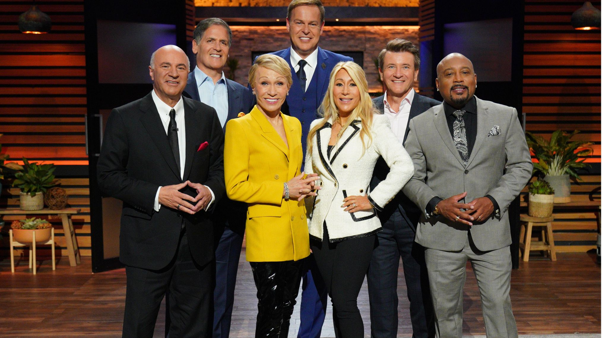
Week #2 | Date: 01/20/2023
I learned about chemical engineering and how it basically applies to anything, whether it be perfume or computers. Most if not all products rely on chemical engineering
in some form, which is why it's a great job. Some specific areas that are cool are nanotechnology, where you work with atoms at a nano-level where they are stronger and faster,
and oil refinery. After, we did a challenge of removing bromate, which consists of sunlight, chlorine, and water, from a lake. Our solution was to use shade balls, which was
the solution. Shade balls prevents most of the sunlight from hitting the lake, causing bromate to not be formed.
My partner and I attempted to create oobleck. We failed miserably, but we tried our best. We didn't stir it evenly enough, leading to one side being really soft and
one side being really hard.
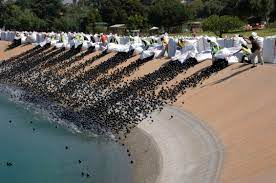
Arduino Car Project
(Week #3 - Week #8)
Our project performed pretty well on the last week because as a group, we worked on it really hard with the time given. My groupmates and I all contributed to the project as much
and as hard as we could, and we asked for help when we were stuck, which definitely led to our success. We didn't achieve what we originally set out for, mainly because we didn't have
access to a third motor that would've allowed for the car to turn. We also didn't get the bluetooth to work because it only worked with Samsung, which we lacked most of the time. Our
design somwhat matched the CAD we made, but we had to shift a few things around since the 3D print came out slightly smaller. We also had to flip everything over to the back side of the
print since nothing would've fit due to the smaller size, but we improvised and made it work.
I learned more about programming and putting wires together with an arduino and how to properly connect it to a motor driver. I also relearned how to solder. I learned about good designs
and builds of arduino cars that allow it to drive properly and other minute stuff of building like weight distribution.
All of my group's responsibilities were split pretty equally. However, one of our groupmates Will was sick during a lot of the project, which definitely slowed us down. Despite this,
Will still contributed a lot during his time with us. He figured out the wiring of the bluetooth and redid the wiring of the arduino correctly when we got stuck while he was here. Ryan
worked completely on the design, which took him a lot of time. He also always helped and tried his best to figure out the bluetooth connection between the phone and the car. Everyone
in the group was cooperative and almost always working, and we always bounced ideas off of each other.
Week #9 | Date: 03/09/2023
With my group, I created a gutter-boat. When were we designing, we decided to use balloons as propulsion, a flat surface to make it float, and a sail to help the
balloon float. We created a raft with a sail on it, with a balloon on the back to propel it. We didn't know how to use rubber bands, which made us go with our decision
for the balloons.
Our boat did horribly. It didn't go as far as we hoped it would, and we didn't set any expectations. The boat went about 0.1 meters. As a group, we didn't fully
understand the directions given to use and improvised the best we could. The boat itself was a tiny bit too big, so we cut it down. However, that wasn't the only
issue. The sail was too big and weighing the boat down, and the balloon failed to propel the boat at all.
For our boat, I would've taped the balloon and then poked holes in it to allow the balloon to slowly let out air instead of all at once. I would've also obviously
downsized the boat as that was the major flaw. If we were given more time, I would've researched gutter boats more.
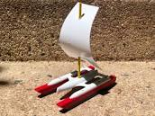
Week #10 | Date: 03/24/2023
Our group has to design a prototype to protect an egg drop from a three-story building. Our initial thoughts were to use a parachute to make the landing easier. Out of
the materials we had, we figured a trash bag would work best with this. We wanted to put the egg in a cage, so we decided to use straws. The straws would bend instead of
breaking on impact, so we figured they would be the best material to use for this. The cage was designed in a triangular prism to best fit the shape of the egg. We also
designed it inside a box, that way there would be more cushion for the landing with balloons and cotton balls inside the box.
As a group, we collaborated together on the cad of the project. I did the parachute, Will did the egg cage, and Ryan did the box. We did it according to the dimensions
as well, and it turned out really well.
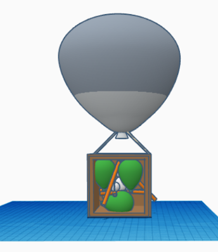
Week #11 | Date: 03/31/2023
Our group started to build the egg drop design. For the first day, we decided to only build the triangular cage. This is due to our box not yet being delivered, which would hold the balloons and cotton balls.
We also did not have access to the actual egg, which delayed our progress. After we built the straw cage with tape, we tested it by dropping it down a floor. It survived, and we waited for the next day.
This final day we both built the whole thing and tested. The triangular cage got a little messed up, so we restored it. We taped the egg into the cage and surrounded it in cotton balls. We then blew the balloons
according to the size in the box, and we were down very quickly. We then tested, and even though it was the loudest and fastest landing, the egg still survived. We retested it again with just the cage just for fun,
and it most certainly did not survive.
Week #12 | Date: 04/6/2023
Our group has to design a cardboard boat that will fit two of us using only cardboard and tape. My initial thoughts were to not even build, rather just float flat on a flat cardboard piece. However, that would not be
fun for me, so instead I designed an actual boat. After measuring, we figured out that we needed at least 5 by 3 feet for passenger space, and my group built off from there. I wanted to make a center-oriented boat where
we would sit criss cross rather than having our legs straight. I wanted the oars to act similar to that of a viking boat, where you face backwards and row. My boat was relatively small, only measuring to around 7 feet, and
had reinforcements, which consisted of a two layers.
As a group, we once again collaborated together on the cad of the project. We decided to design a viking boat. We made the boat 12 inches long and the oars 5 inches long. We also added shields to the boat, as any old
fashion viking boat would have, and figured to make cardboard viking helments if we had spare time.
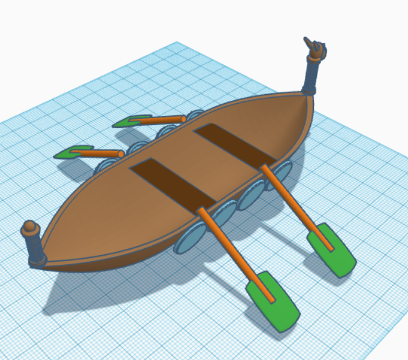
Week #13 | Date: 04/14/2023
Our group started building our oars out of a lack of tape and a boxcutter to start on the body. We experimented with twisting the
cardboard into an oar, but that ultimately did not work. We did not make much progress either than that. However, the next day,
we finalized our oars. With access to a boxcutter, we correctly creased the oars to make a box shape. However, a problem with the
box shape is that it folds too easily. Instead, we decided that we would make a triangular shape with the cardboard and double up
on one layer. We also made it like a puzzle where the cardboard layers would overlap with each other, and that way we would have
less to tape. It worked extremely well, and we made all four oars with this method.
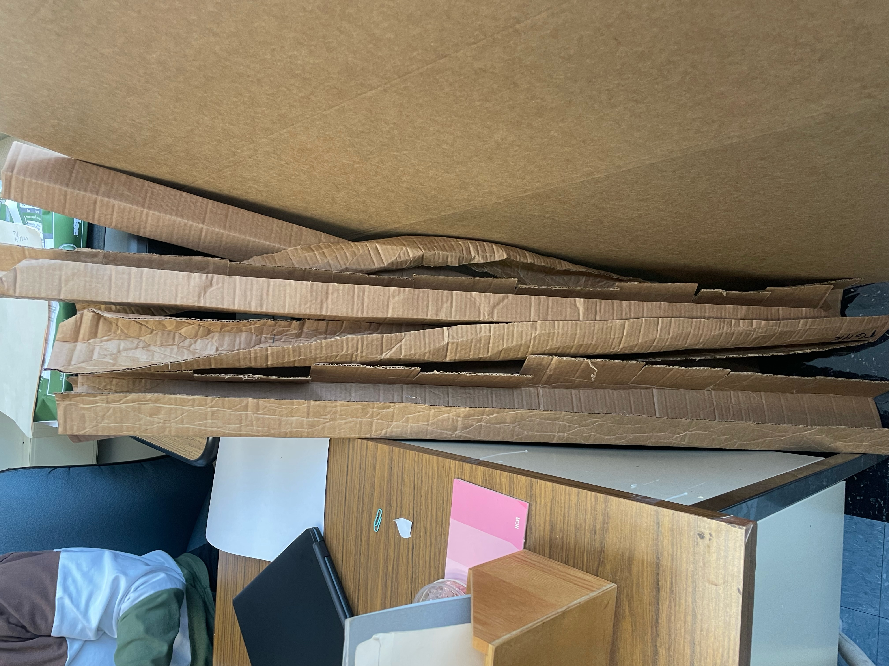
Week #14 | Date: 04/21/2023
Our group reinforced the oars and made the paddles. We made the paddles out of a broken down, white cardboard box. We then cut this
box in half to create a triangle that would go over the end of the oar. We trimmed the cardboard piece to fit onto the oar. We used
an oar as a prototype and taped it altogether, trying to use as little as tape as possible. One problem we faced was that the oar would
bend. We figured in order to fix it, we would need to fill the inside of the oar with more cardboard. We didn't have enough time to actually
do this, so we'll do in next week. Will worked on the prototype of our viking boat for the entire week as well, and we haven't finished it.
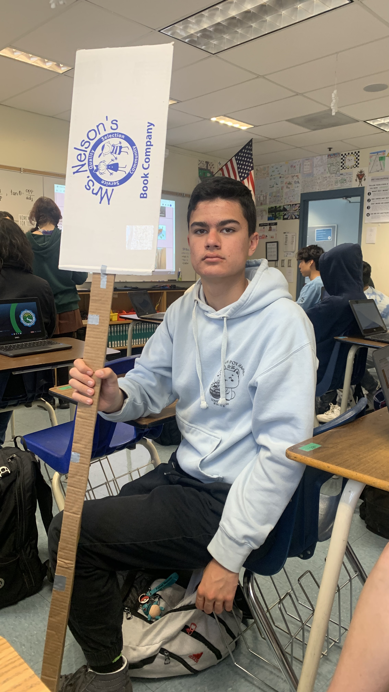
Week #15 | Date: 04/28/2023
Our group made a new oar, this time with more tape for better reinforcement. We figured it would crease less the less we test it around, so
for now we are not touching it. Will finished the prototype, and we had to figure out the right amount of weight to use for the boat. Since it's
1/12 scale (1 inch for 1 foot) and we have 270 pounds total for the boat to hold, we figured a weight of 22.5 pounds would be needed for the prototype.
The prototype however was only 10 inches and missed 5 inches of our design, meaning the protoype was supposed to hold 18 pounds.
We tested the prototype and it absolutely failed. It was too small to hold a brick, making the weight distribution uneven and thus collapsing immediately.
With this failure, we started building the real boat and cutting out the U-curves our boat will have.
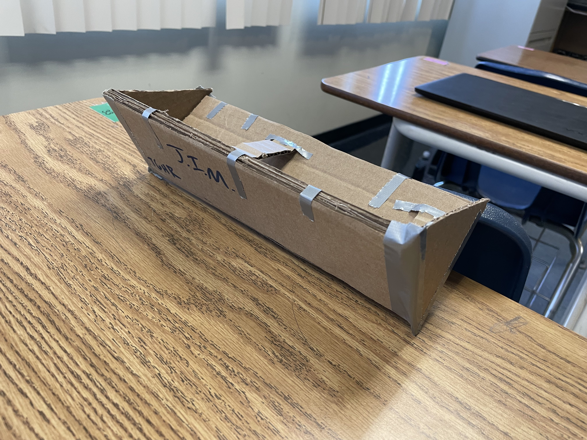
Week #16 | Date: 05/05/2023
Our group started designing our final boat. We measured 6 feet for the body of the boat, which was two cardboards taped together. We then had to figure out
how to design the front curve of the boat. After a while, we figured out to make a bunch of triangles bend upwards to create a curve. The next day, we built
this curve and started designing the back too. We plan to do two layers of the boat still, so we have to start working on that next week. We also have to build
the walls around the boat to make sure we don't sink instantly due to imbalance.
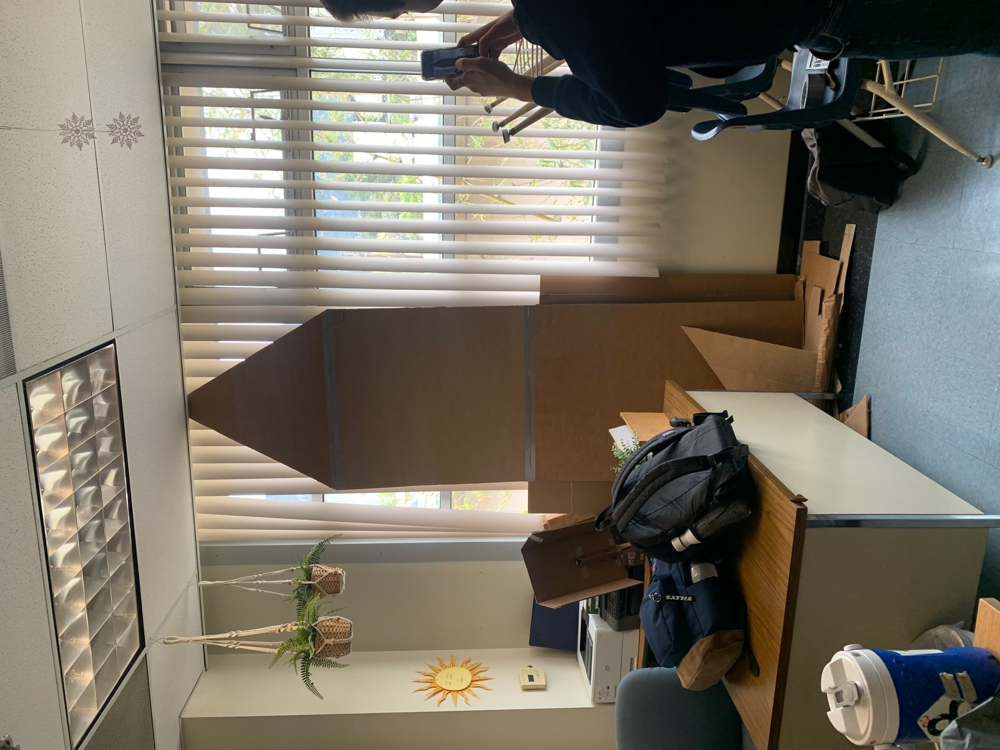
Week #17 | Date: 05/12/2023
Our group cut all the pieces we needed for the curves of the front of the boat. Next week, we will tape them all together.
Our group also did the paper roller coaster challenge. We needed a good length and two loops. We designed a spiral then went into a ramp. The spiral was
very hard to build due to the paper randomly folding. The ramp went into a loop, and into a long pipe straight downwards into another loop. It was a good length,
but we did not focus on rollercoast too much because we wanted to work on our boat more.
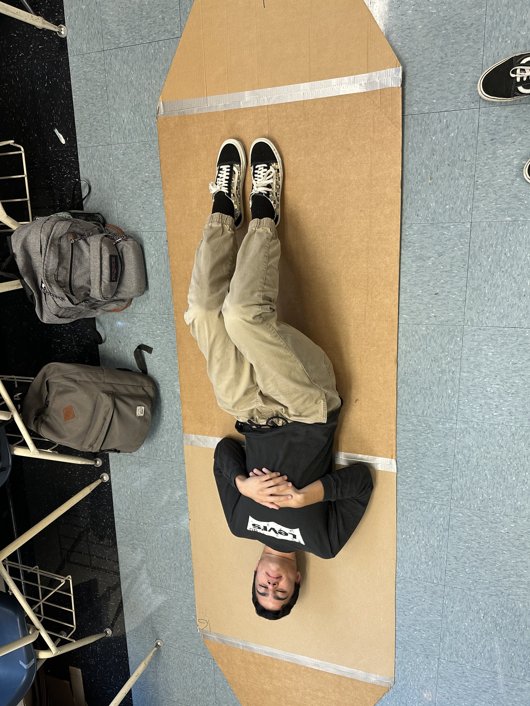
Week #18 | Date: 05/19/2023
With having finished our paper roller coaster, we dedicated this week to continue working on the boat. We first taped one of the walls together on the first day,
however, this did not work. Due to having to move the boat to another classroom, our boat got completely destroyed by the time we got back to it on the second day.
We got a better sense of how to tape the boat together, and it finally worked. Now, the walls are almost fully taped. We need to start cutting out triangles to fit
in between the open spaces left by the walls.
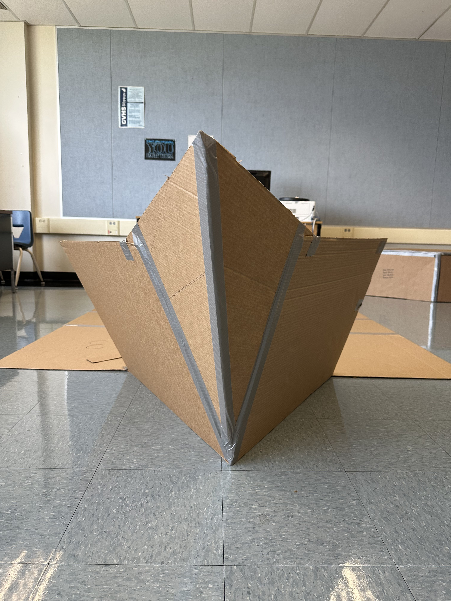
Week #19 | Date: 05/26/2023
We worked on the boat for the entire week again. We cut out the triangles and taped them all down. We had difficulties taping the bottom of the boat since we couldn't
flip over the entire boat. However, we figured we could lift the boat and slide the tape underneath. It worked beautifully, and we taped the entire bottom corners of
the boat. Once we were down with the bottom, we went around and reinforced the other tapes since they are pretty weak. We also taped the holes in the boat. Finally, we
reinforced the oars and figured we didn't have enough time to build two more, so we just stuck with the original two we made.